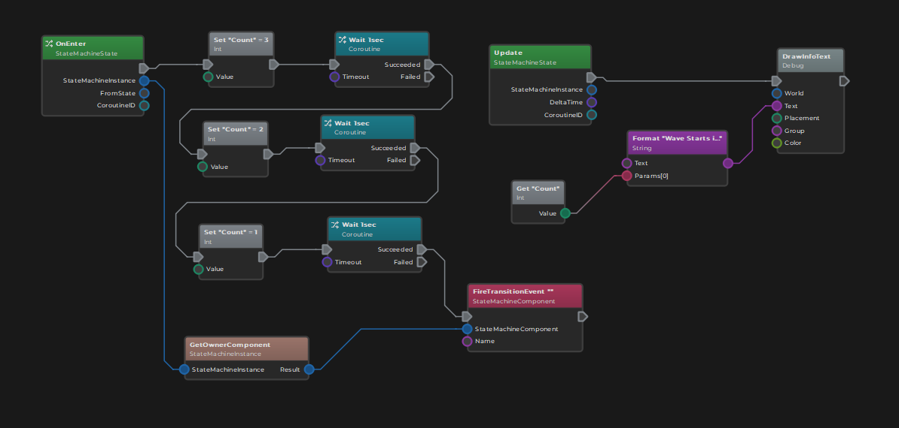

Custom Code with Visual Scripts
The engine supports visual scripting as a way to execute custom logic without writing code. Visual scripting aims to be quick and easy to use, while providing a subset of the engine's features that is most useful for the intended use cases.

Visual Script Use Cases
Visual scripting is meant for small scripts that deal with simple tasks. Often they act as glue code between other systems. For example to wait for an event from one component and then instruct another component to do something. Such logic would be overly cumbersome to set up in C++, and the performance difference is negligible.
Visual script code may also be used to quickly prototype behavior to get an idea how something might work. However, dealing with edge-cases and errors typically involves a lot of complex code, and once the stage is reached where a feature should be fully fledged out and polished, it might be better to migrate to C++.
In general, visual scripting is no substitue for C++. It only provides a subset of the features. A lot of functionality is deliberately left inaccessible, such as working with resources (TODO) or game states. If you need to access them, you definitely should use C++.
Custom Components
The Visual Script Class Asset allows you to write custom components to interface with other components within the same object hierarchy.
Custom State Machine States
The Visual Script Class Asset may also be used to write custom state machine states. In this case the script code is executed by a state machine whenever the state is active.
Performance Considerations
Most visual script code actually calls existing C++ functions. A custom virtual machine ministrates those calls. The execution is relatively fast and shouldn't be a concern for the intended use cases. It is more likely that you run into the limitations of editing the script, than performance bottlenecks.
See Also
- Custom Code
- Visual Script Class Assetem, you definitely should use C++.